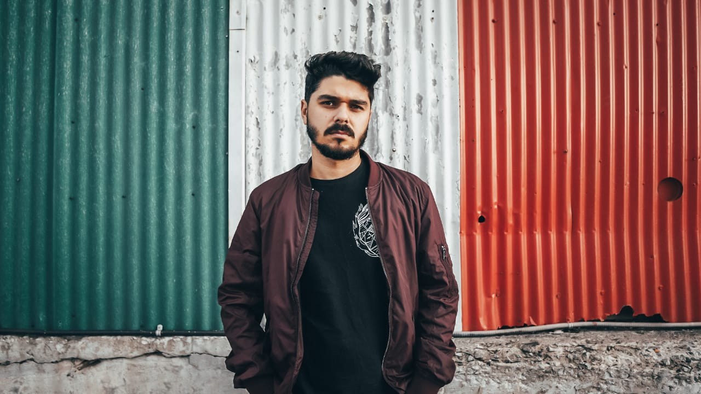

About me
Hi there!
I’m a freelance videographer originally from SP, Brazil and now based out
of Ottawa, CA.
As a musician, husband, father, and all-around
doer person, I love to see life from an optimistic perspective.
"Optimism is the faith that leads to achievement.
Nothing can be done without hope and confidence."
In my spare time I love:
- Playing some blues on my electric guitar
- Take some random street photos
- Wasting time on my PS5
2022 is a landmark for me. I just started to follow a student path, seeking knowledge, but above all, pursuing to become a better person understanding new cultures, and building new experiences.
I’m on my 10 term at Algonquin College and I’m already thrilled about what is to come in the future!